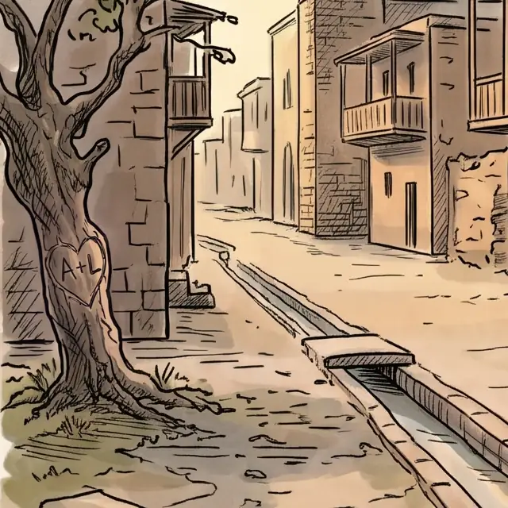
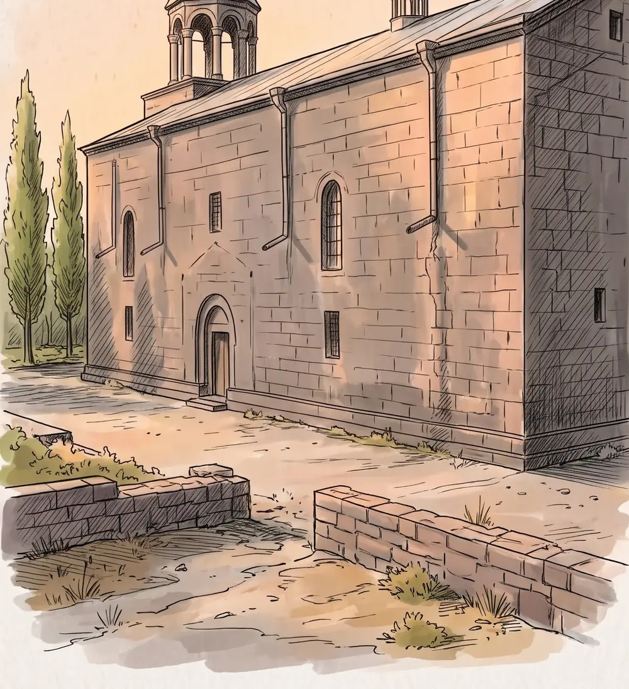
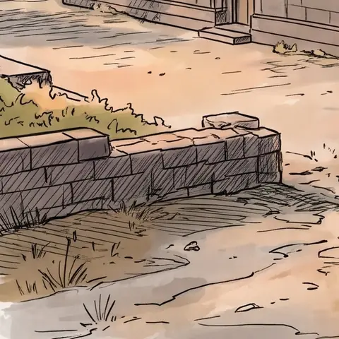

Թանգարան «Չկա» · Պողոս-Պետրոս եկեղեցիМузей «Չկա» · церковь Погос-ПетросՉկա museum · Poghos-Petros church
ՔայլШагStep 1/4Ինչ է սաЧто этоWhat it is
Քո անունը՝ թանգարանում ընդմիշտТвоё имя — в музее навсегдаYour name in the museum, forever
Նկարիչը քո անունը կփորագրի քանդված եկեղեցու կենդանի նկարի քարին։ Այն կերևա օրը, մայրամուտին և գիշերը։Художник вырежет твоё имя на камне в живом рисунке снесённой церкви. Его будет видно днём, на закате и ночью.An artist carves your name into a stone in the living drawing of a demolished church. It shows by day, at sunset and at night.
- Ընտրում ես տեղը նկարումВыбираешь место на рисункеPick a spot in the drawing
- Գրում ես անունըПишешь имяType the name
- 7 օրվա ընթացքում նկարիչը փորագրում է այնЗа 7 дней художник вырезает егоWithin 7 days the artist carves it




ՔայլШагStep 2/4ՏեղըМестоSpot
Ընտրիր տեղըВыбери местоChoose a spot
Սահեցրու նկարները և սեղմիր ազատ տեղին։Листай рисунки и нажми на свободное место.Swipe through the drawings and tap a free spot.
Համակարգչում՝ սլաքներով կամ ← → ստեղներով։На компьютере — стрелками или клавишами ← →.On a computer: the arrows or the ← → keys.
Ազատ է 8 տեղ 8-իցСвободно 8 из 88 of 8 spots free
Տեղը դեռ ընտրված չէМесто ещё не выбраноNo spot chosen yet
Ընտրված է՝Выбрано:Chosen:

Մոտավորապես այսպես։ Իսկականը նկարում է նկարիչը։Примерно так. По-настоящему рисует художник.Roughly like this. The real one is drawn by an artist.
ՔայլШагStep 3/4ԱնունըИмяName
Գրիր անունըНапиши имяWrite the nameԳրիր երկու անունНапиши два имениWrite two names
- ՏեղըМестоSpot
- —
- ԳրությունըНадписьInscription
- —
- ԺամկետըСрокReady
- մինչև 7 օրдо 7 днейwithin 7 days
ՔայլШагStep 4/4ՎճարումОплатаPayment
Ստուգիր և վճարիրПроверь и оплатиCheck and pay
- Չհավանես՝ անվճար կվերանկարենք։Не понравится — перерисуем бесплатно.Don't like it? We'll redraw it for free.
- Պատրաստ լինելուն պես հղումը կգա նամակով։Когда будет готово, ссылка придёт на почту.When it's ready, the link arrives by email.
Վճարում՝ քարտով, Polar-ի միջոցովОплата картой через PolarCard payment via Polar